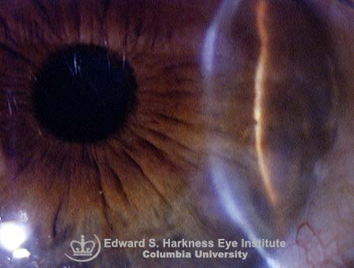

+ Thoái hóa giác mạc không do viêm của Salzmann

+ Đây là một dạng viêm giác mạc nốt được biết như một bệnh lý thoái hóa sau viêm, dễ dàng tiếp theo sau một viêm giác mạc phồng nước.
+ Viêm giác mạc với đặc điểm là có những u lồi nhỏ màu trắng nhạt, ở lớp biểu mô, giữa những nốt này là những khoảng giác mạc bình thường hoặc hơi đục.
+ Những nốt như những hạt gạo bé, có trạng thái đục lờ nhờ dưới ánh đèn khe, tạo ra một vòng đồng tâm vây quanh trung tâm giác mạc. Nốt không có mạch máu ở sâu mà chỉ hơi có ở nông
+ Xét nghiệm mô học cho thấy tổn thương giác mạc ở lớp nông, biểu mô và ở nhu mô kề ngay dưới đó, màng Bowmann cũng bị hủy hoại. Viêm giác mạc nốt Salzmann ít có triệu chứng cơ năng và tiến triển chậm
